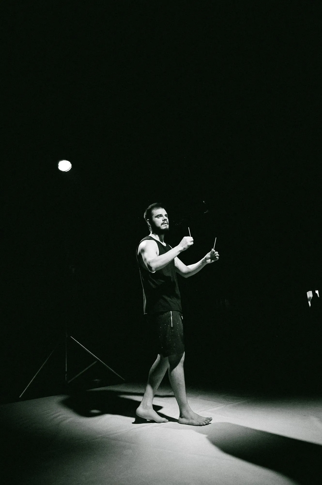

Marcus Moreno

Contacto
Producción
Junior Cecon
Plural Produtora
(11) 95157-9773 contato@pluralprodutora.com.br @pluralprodutoraProducción
Cristiane Klein
Dionísio Produção
(11) 99290-3037 cristiane@dionisio.net.br Para programadores y prensa Dossier, fotos en alta resolución y videosFotografías Silvia Machado (A Imagem como Ausência, A Flor da Lua, Estudo para o Encontro, Instante-já, Onde Houver Céu) · Danilo Patzdorf y Claudia Magalhães (A Flor da Lua). Fotogramas y fragmentos de video: canal de Marcus Moreno en YouTube.